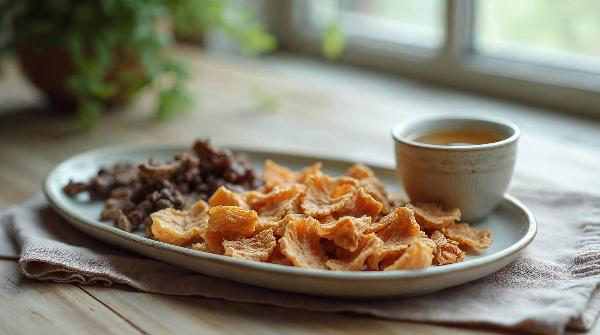
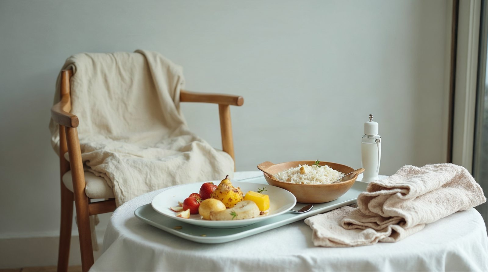
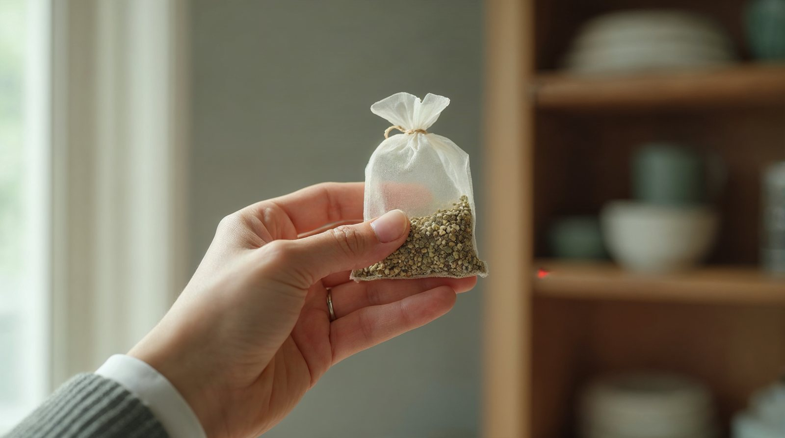
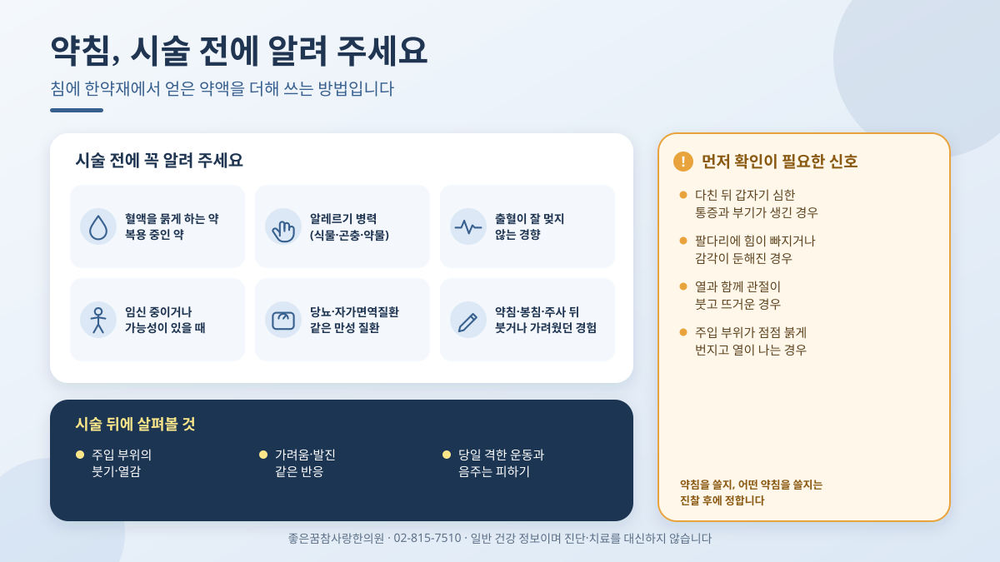

이종호 한의사 감수좋은꿈참사랑한의원 대표원장 (한의사 면허번호 19769)발행 2026-11-23 · 수정 2026-11-26
이 글의 차례
- 왜 약침을 함께 쓰기도 하나요
- 왜 같은 자리가 아파도 사람마다 방법이 달라질까요
- 먼저 이렇게 여쭙니다
- 시술 전에 꼭 알려 주세요
- 예를 들면 이런 경우입니다
- 약침에 대해 흔히 듣는 오해는 무엇일까요?
- 약침과 헷갈리기 쉬운 방법은 무엇이 다를까요?
- 시술 뒤에 살펴볼 것
- 약침을 미루거나 다른 방법을 고르는 날도 있나요?
- 약침을 맞는 날은 이렇게 준비해 오세요
- 스스로 점검해 보세요
- 약침 뒤 변화는 어떻게 적어 두면 좋을까요?
- 약침 뒤 아픈 동작은 어떻게 다루면 좋을까요?
- 얼마나 지켜보고, 언제 상담하면 좋을까요
- 한의원에서 함께 살필 수 있는 경우
- 이렇게 기록해 오시면 상담이 쉬워집니다
- 이런 증상은 먼저 확인이 필요합니다
- 함께 읽으면 좋은 글
약침은 한약재에서 추출해 정제한 약액을 아주 소량, 침으로 경혈이나 통증 부위 주변에 주입하는 방법입니다. 모든 통증에 쓰는 것이 아니라 진찰 후 필요하다고 판단될 때 씁니다.
시술 전에는 알레르기, 임신 가능성, 혈액을 묽게 하는 약(항응고제 등)을 비롯해 복용 중인 약을 꼭 먼저 알려 주세요. 어떤 약침을 쓸지와 비용은 진찰 뒤 설명드립니다. 건강보험(또는 자동차보험) 적용 여부는 방문 전 전화로 확인해 주세요.
왜 약침을 함께 쓰기도 하나요
- 침 자극에 한약재에서 얻은 약액을 더해 아픈 자리 가까이에 쓰는 방법이라, 통증 부위가 뚜렷하고 굳은 지점이 있을 때 함께 고려합니다.
- 같은 통증이라도 부위와 원인, 몸 상태가 달라 침만으로 할지, 약침을 함께 쓸지 진찰 후 정합니다.
- 어떤 약침을 쓸지, 몇 번 할지도 상태에 따라 달라 미리 정해 두지 않습니다.
- 몸 상태나 복용 중인 약에 따라서는 약침을 쓰지 않고 다른 방법을 고르는 경우도 있습니다.
- 깊이 있는 부위나 혈관·신경이 가까운 부위는 초음파로 위치를 확인하며 놓기도 하며, 모든 약침에 초음파를 쓰는 것은 아닙니다.
왜 같은 자리가 아파도 사람마다 방법이 달라질까요
같은 어깨 통증이라도 아픈 곳이 힘줄인지, 근육이 뭉친 자리인지, 관절 주변인지에 따라 살피는 방법이 달라집니다. 다친 지 며칠 안 된 통증과 몇 달째 같은 동작에서 반복되는 통증도 같은 방식으로 다루기 어렵습니다.
몸 전체의 상태도 함께 봅니다. 잠을 거의 못 자고 있는지, 당뇨처럼 상처 회복에 영향을 주는 질환이 있는지, 혈액을 묽게 하는 약을 드시는지에 따라 약침을 쓸지, 쓴다면 어느 정도로 할지가 달라질 수 있습니다.
그래서 저는 약침이라는 방법부터 정하지 않고, 아픈 동작과 아픈 지점, 몸 상태를 먼저 확인한 뒤 침만 쓸지, 약침을 함께 쓸지, 추나나 다른 방법이 더 맞을지를 함께 고릅니다.

먼저 이렇게 여쭙니다
- 어떤 동작에서 가장 아프고, 언제부터인가요?
- 약이나 음식, 곤충에 알레르기가 있나요?
- 혈액을 묽게 하는 약이나 당뇨약을 드시나요?
- 최근 그 부위에 주사를 맞은 적이 있나요?
- 임신 중이거나 가능성이 있나요?
- 통증 때문에 잠을 설치거나 소화가 흔들리지는 않나요?
- 일하거나 운동할 때 그 동작을 하루에 몇 번쯤 반복하시나요?
- 예전에 침이나 약침을 맞고 어지럽거나 불편했던 적이 있나요?
시술 전에 꼭 알려 주세요
- 알레르기 병력(식물, 곤충, 약물)
- 복용 중인 약, 특히 혈액을 묽게 하는 약(항응고제·항혈소판제 등)
- 출혈이 잘 멎지 않는 경향
- 임신 중이거나 가능성이 있는 경우
- 당뇨나 자가면역질환 같은 만성 질환
- 예전에 약침이나 주사를 맞은 뒤 붓거나 가려웠던 경험
예를 들면 이런 경우입니다
- 예를 들어 마우스를 쓰는 쪽 어깨가 팔을 올릴 때마다 걸린다는 직장인이라면, 아픈 동작과 콕 집어 아픈 지점을 확인하고 초음파가 필요한지, 침만으로 할지 약침을 함께 쓸지를 진찰 뒤 정합니다.
- 예를 들어 주말마다 테니스나 골프를 치고 팔꿈치 바깥쪽이 아프다는 분이라면, 운동 강도와 다음 운동 일정을 함께 여쭙고 약침을 받은 날 운동을 어떻게 조절할지 이야기합니다.
- 예를 들어 혈액을 묽게 하는 약을 드시는 어르신이라면, 약 이름과 드시는 이유를 먼저 확인하고 약침 대신 다른 방법을 함께 검토하기도 합니다.
- 예를 들어 아이를 자주 안아 올리다 손목 엄지 쪽이 시큰하다는 부모님이라면, 아이를 드는 자세와 하루에 안는 횟수를 함께 여쭙고 약침을 쓸지와 함께 손목을 덜 쓰는 방법을 이야기합니다.
약침에 대해 흔히 듣는 오해는 무엇일까요?
- "약침은 일반 침보다 늘 세다": 약침은 방식이 다를 뿐, 어느 쪽이 더 세다고 나눠 말하기 어렵습니다. 부위와 상태에 따라 고릅니다.
- "한 번 맞으면 바로 가벼워져야 한다": 맞은 뒤 하루 이틀은 오히려 뻐근할 수 있고, 변화의 흐름은 사람마다 다릅니다. 그래서 다음 진료 때 지낸 이야기를 함께 듣고 정합니다.
- "자주 맞을수록 좋다": 횟수를 늘리는 것보다 지난번 뒤의 반응을 보고 간격과 방법을 조절하는 것이 중요합니다.
- "약침을 맞으면 운동을 쉬어야 한다": 그날 격한 운동은 피하시도록 안내하지만, 다음 날부터는 통증이 심해지지 않는 범위의 가벼운 움직임을 권하는 경우가 많습니다.
약침과 헷갈리기 쉬운 방법은 무엇이 다를까요?
- 일반 침: 약액 없이 침 자극만 씁니다. 아픈 자리에 놓기도 하고, 손발처럼 떨어진 자리에 놓기도 합니다.
- 병원에서 맞는 주사: 의료기관에서 쓰는 주사약과 약침액은 성분과 목적이 다릅니다. 최근 같은 부위에 주사를 맞으셨다면 날짜와 약 이름을 알려 주세요.
- 초음파 유도 약침: 깊거나 구조가 복잡한 부위에 놓을 때 초음파 화면으로 위치를 보면서 진행하는 방법입니다(초음파 유도 약침이란 무엇인가요?).
- 체외충격파: 바늘 없이 몸 밖에서 힘줄이나 근막 쪽에 충격파 에너지를 전달하는 방법으로, 약침과는 방식이 전혀 다릅니다.
이름이 비슷하거나 같은 날 함께 받는 경우가 있어 헷갈리실 수 있습니다. 그날 무엇을 받았는지 궁금하시면 귀가 전에 편하게 물어봐 주세요.
시술 뒤에 살펴볼 것
- 주입 부위가 붓거나 열감이 있는지
- 가려움, 발진, 두드러기 같은 반응이 있는지
- 당일 격한 운동이나 음주를 피하라는 안내를 지키고 있는지
- 주입한 자리가 하루 이틀 뻐근할 수 있으며, 점점 심해지면 연락하기
- 그날 저녁 부위에 멍이나 붓기가 생겼는지 한 번 확인하기
- 다음 날 아침 처음 움직일 때 아팠던 동작이 어땠는지 기억해 두기
- 주입한 자리를 손으로 세게 누르거나 문지르지 않았는지 돌아보기
약침을 맞는 동안이나 맞은 뒤 두드러기·가려움이 번지면 참지 말고 바로 알려 주세요. 숨이 차거나 어지럽거나 얼굴·입술이 붓는 것은 알레르기 반응일 수 있습니다.
한의원 안이라면 그 자리에서 바로 말씀해 주시고, 돌아가신 뒤라면 연락을 기다리지 말고 지체 없이 가까운 응급실로 가세요.
약침을 미루거나 다른 방법을 고르는 날도 있나요?
네, 있습니다. 놓으려는 자리 피부에 상처나 염증, 심한 가려움이 있으면 그 부위는 피합니다. 감기 기운이나 열로 컨디션이 크게 떨어진 날, 식사를 오래 걸러 어지러운 날에도 약침은 미루고 침이나 다른 방법으로 그날 진료를 이어 가기도 합니다.
최근 같은 부위에 주사를 맞으셨거나, 임신 가능성을 아직 확인하지 못한 경우에도 서두르지 않습니다. 약침은 여러 방법 가운데 하나일 뿐이라, 그날 몸 상태에 맞지 않으면 다음으로 미뤄도 진료의 흐름은 이어집니다. 미루게 되면 그 이유와 다음에 확인할 점을 함께 말씀드립니다. 다음 진료 때 몸 상태를 다시 보고 정하면 됩니다.
약침을 맞는 날은 이렇게 준비해 오세요
- 식사를 거르지 말고 가볍게라도 드시고 오기(공복에는 어지럽게 느끼는 분이 있습니다)
- 당뇨약을 드신다면 평소처럼 식사하고 약을 드신 뒤 오기
- 아픈 부위를 드러내기 쉬운 편한 옷 입고 오기
- 바늘이 무섭거나 예전에 주사를 맞고 어지러웠던 적이 있다면 미리 말씀하기
- 그날 운동이나 운전 일정이 있다면 함께 알려 주기
- 최근 다른 의료기관에서 받은 영상 검사 결과가 있다면 가져오기
- 진료 뒤 바로 중요한 일정이 있다면 시간을 넉넉히 두고 오기
긴장을 많이 하시는 분은 누운 자세에서 진행하고, 놓는 동안 계속 말씀을 나누며 천천히 진행합니다. 불편하면 언제든 멈출 수 있으니 참지 말고 바로 말씀해 주세요. 처음이라 걱정이 크시다면 그 마음부터 이야기 나누고 시작해도 괜찮습니다.

스스로 점검해 보세요
아래는 약침이 맞는지 정하는 기준이 아니라, 상담 때 미리 알려 주시면 좋은 내용입니다.
- 같은 동작에서 같은 자리가 2주 넘게 아프다
- 눌렀을 때 콕 집어 아픈 자리가 있다
- 예전에 주사나 약침 뒤 붓거나 가려웠던 적이 있다
- 혈액을 묽게 하는 약이나 당뇨약을 먹고 있다
- 통증 때문에 잠을 설치는 날이 있다
- 임신 중이거나 임신을 계획하고 있다
약침 뒤 변화는 어떻게 적어 두면 좋을까요?
약침을 맞은 뒤에는 "좀 가벼워진 것 같다", "그대로다"처럼 막연하게 기억하기보다, 늘 아팠던 동작 하나를 정해 같은 기준으로 적어 두시면 다음 진료 때 이야기를 나누기 쉽습니다.
- 가장 불편했던 동작 하나를 정하고, 그 동작의 불편을 0부터 10까지 점수로 매기기
- 아침에 일어나 처음 움직일 때와 저녁의 점수를 따로 적기
- 통증 때문에 자다 깬 날이 있었는지 적기
- 주입한 자리가 뻐근했다면 며칠 이어졌는지, 붓기나 멍이 있었다면 사진 한 장 남기기
기록은 길 필요가 없습니다. 휴대전화 메모에 날짜와 점수만 적어 두셔도 충분합니다. 이 기록을 바탕으로 다음 진료에서 같은 방법을 이어 갈지, 다른 방법을 더할지 함께 정합니다. 점수가 기대만큼 움직이지 않더라도 그 자체가 다음 방법을 고르는 데 중요한 단서가 됩니다.
약침 뒤 아픈 동작은 어떻게 다루면 좋을까요?
약침을 맞은 날에는 아팠던 동작을 일부러 여러 번 해 보며 확인하지 않으시길 권합니다. 주입한 자리가 뻐근한 상태에서 같은 동작을 반복하면 불편이 더 오래 남을 수 있습니다.
다음 날부터는 통증이 크게 늘지 않는 범위에서 천천히 움직여 보세요. 예를 들어 어깨라면 팔을 머리 위로 힘껏 올리기보다 가슴 높이까지만 천천히 들어 보는 식으로 시작할 수 있습니다.
주입한 자리를 손으로 세게 문지르거나 누르지 마시고, 일하면서 같은 동작을 오래 반복해야 한다면 중간중간 쉬는 시간을 만들어 주세요. 어떤 동작을 얼마나 해도 되는지는 진료 때 부위에 맞게 다시 말씀드립니다. 일상에서 자주 하는 동작 가운데 궁금한 것이 있다면 진료실에서 직접 해 보이시며 물어봐 주셔도 좋습니다.

얼마나 지켜보고, 언제 상담하면 좋을까요
- 주입한 자리가 하루 이틀 뻐근한 정도는 지켜볼 수 있으며, 사흘이 지나도 이어지거나 점점 심해지면 연락해 주세요.
- 같은 동작에서 반복되는 통증이 1~2주 넘게 이어지면 진료를 받아 보시길 권합니다.
- 주입 부위가 점점 붉게 번지고 열이 나면 다음 진료를 기다리지 말고 바로 연락하거나 의료기관을 찾으세요.
한의원에서 함께 살필 수 있는 경우
- 같은 동작에서 반복되는 통증이 있는 경우 불편한 동작과 아픈 지점을 함께 살핍니다.
- 침 치료 뒤 남는 뻐근함이 있는 경우 통증 부위 주변을 넓게 다시 살핍니다.
- 통증과 함께 잠이나 소화가 흔들리는 경우 몸 전체의 리듬을 함께 여쭙습니다.
좋은꿈참사랑한의원에서는 아픈 곳을 넓게 살핀 뒤, 필요하다고 판단될 때 침, 약침, 추나 등을 상태에 맞게 이어서 씁니다. 같은 동작으로 달라진 점을 기록해 두고 다음 진료에서 이어서 여쭙습니다(통증 글 모아 보기).
첫 방문에는 맥을 짚으면서 아픈 부위와 경위, 가장 불편한 동작, 잠과 소화 같은 생활을 여쭙습니다. 이어서 아픈 곳을 눌러 보고 움직여 보며, 필요하다고 판단되면 초음파로 근육과 힘줄을 살핍니다.
알레르기와 복용 중인 약을 확인한 뒤, 약침을 쓸지 침만 쓸지, 쓴다면 어느 부위에 왜 놓는지를 먼저 설명드리고 진행합니다. 귀가 전에는 그날 지켜볼 점과 운동·목욕 같은 생활 안내를 드립니다.
이렇게 기록해 오시면 상담이 쉬워집니다
- 아픈 부위와 가장 불편한 동작, 시작된 날짜
- 예전에 약침이나 주사 뒤 반응이 있었다면 그 내용
- 복용 중인 약과 영양제 이름
- 받은 영상 검사 결과(있다면)
- 통증이 심한 시간대(아침, 오후, 밤)
이런 증상은 먼저 확인이 필요합니다
- 다친 뒤 갑자기 심한 통증과 부기가 생긴 경우
- 다리나 팔에 힘이 빠지거나 감각이 둔해진 경우
이런 신호가 있으면 한의원보다 가까운 병원이나 응급실을 먼저 찾으세요.
함께 읽으면 좋은 글
- 약침을 받기 전에 한의원에 꼭 알려야 하는 것은 무엇인가요?
- 약침을 맞은 날 운동이나 목욕을 해도 되나요?
- 초음파 유도 약침이란 무엇인가요?

여쭙는 것
- 어떤 동작에서 가장 아프고, 언제부터인가요?
- 약이나 음식, 곤충에 알레르기가 있나요?
- 혈액을 묽게 하는 약이나 당뇨약을 드시나요?
한의원에서 함께 살필 것
- 같은 동작에서 반복되는 통증이 있는 경우 불편한 동작과 아픈 지점을 함께 살핍니다.
- 침 치료 뒤 남는 뻐근함이 있는 경우 통증 부위 주변을 넓게 다시 살핍니다.
- 통증과 함께 잠이나 소화가 흔들리는 경우 몸 전체의 리듬을 함께 여쭙습니다.
먼저 확인이 필요한 신호
- 다친 뒤 갑자기 심한 통증과 부기가 생긴 경우
- 다리나 팔에 힘이 빠지거나 감각이 둔해진 경우
한눈에 보는 표
| 구분 | 핵심 |
|---|---|
| 여쭙는 것 | 어떤 동작에서 가장 아프고, 언제부터인가요? 약이나 음식, 곤충에 알레르기가 있나요? |
| 한의원에서 함께 살필 것 | 같은 동작에서 반복되는 통증이 있는 경우 불편한 동작과 아픈 지점을 함께 살핍니다. 침 치료 뒤 남는 뻐근함이 있는 경우 통증 부위 주변을 넓게 다시 살핍니다. |
| 먼저 확인이 필요한 신호 | 다친 뒤 갑자기 심한 통증과 부기가 생긴 경우 다리나 팔에 힘이 빠지거나 감각이 둔해진 경우 |
자주 묻는 질문
약침은 모든 통증에 쓰나요?
아닙니다. 통증의 원인과 부위, 몸 상태를 보고 필요하다고 판단될 때 사용합니다.
건강보험이 되나요?
건강보험(또는 자동차보험) 적용 여부는 방문 전 전화로 확인해 주세요. 어떤 방법을 쓸지는 진찰 뒤 설명드립니다.
혈액을 묽게 하는 약을 먹고 있어도 되나요?
시술 여부를 정하기 전에 꼭 알려 주세요. 약은 처방한 의사와 상의 없이 끊지 마시고, 상황에 따라 다른 방법을 함께 검토합니다.
약침과 일반 침은 무엇이 다른가요?
일반 침은 침 자극만 쓰고, 약침은 한약재에서 정제한 약액을 소량 함께 주입합니다. 어느 쪽이 맞을지는 진찰 후 정합니다.
약침은 몇 번 맞아야 하나요?
횟수를 미리 정해 두지 않습니다. 다시 오실 때마다 지난번 뒤 어떻게 지내셨는지와 같은 동작의 변화를 이어서 여쭙고, 계속할지 다른 방법으로 바꿀지 그때그때 함께 정합니다.
좋은꿈참사랑한의원은 재진 때 지난번 이야기부터 이어서 여쭙니다. 진료시간과 예약은 오시는 길에서 확인하세요.
어디서 상담받을 수 있나요?
좋은꿈참사랑한의원은 서울 동작구 만양로2길 2 신성빌딩 3층·5층(서울 동작구 상도동, 7호선 상도역 3번 출구 근처)에 있습니다. 한의사 3명(이종호 대표원장, 조영기 수석진료원장, 정원영 진료원장)이 진료합니다. 진료시간은 평일 09:30~20:00(점심 13:00~14:00), 토·일·공휴일 09:30~15:00이며, 방문 전 전화로 확인을 권합니다. 예약은 네이버 예약, 카카오톡 상담, 전화 02-815-7510로 받습니다.
이 글은 일반적인 건강 정보이며 개인의 진단이나 치료를 대신하지 않습니다. 증상이 있거나 복용 중인 약이 있다면 진료를 통해 확인하세요. 치료 효과는 개인마다 다를 수 있습니다.
작성 기준: 일반적으로 알려져 있는 건강 정보를 참고해 정리했습니다(대표원장 감수). 증상 기록은 1~2주 동안 하루 1회, 비슷한 시간에 적어 오시면 지난 상태와 비교하기 쉽습니다.